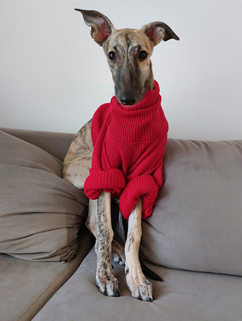
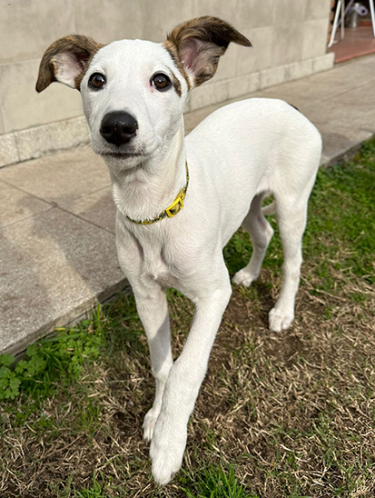
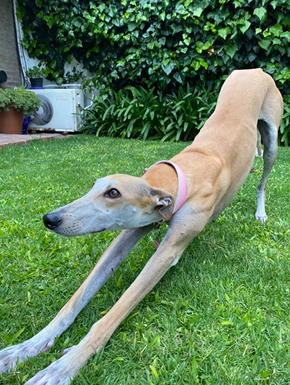
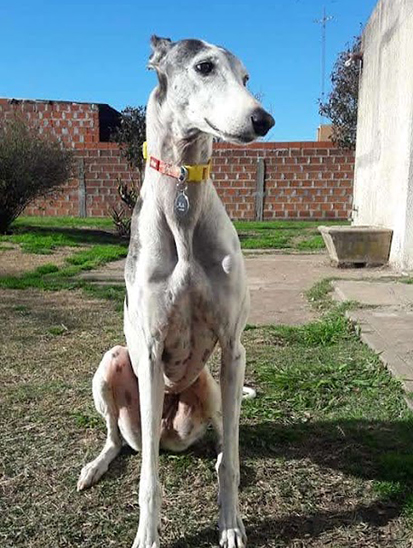
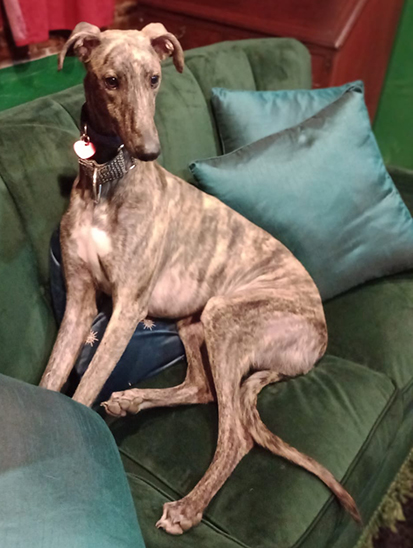
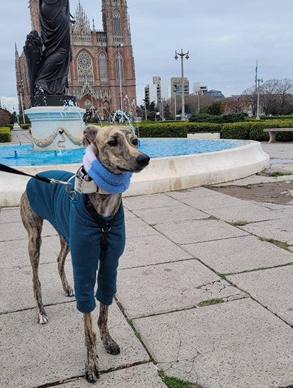
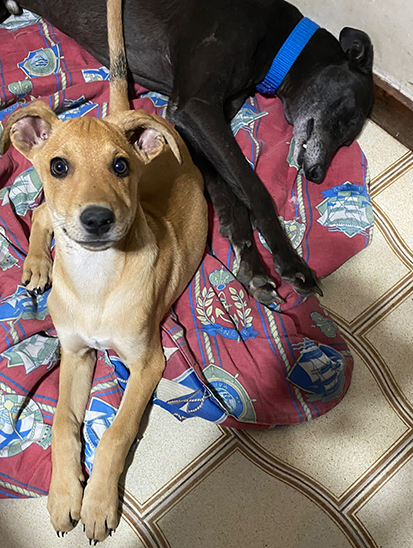
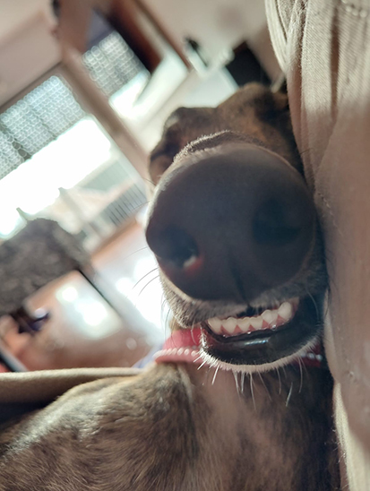
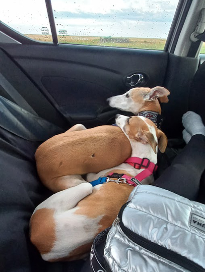
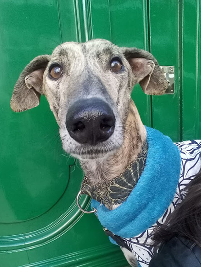

Requisitos para adoptar un Galgo Milagro de Rojas





- Entender y aceptar que la adopción es un acto de amor y de responsabilidad voluntario, que implica paciencia y respeto por los tiempos de adaptación del galgo/a adoptado/a
- Contar con tiempo, ganas y voluntad de trabajar en aquellos aspectos que deban fortalecerse, mejorarse o incluso modificarse tanto en la conducta del adoptado como en la familia adoptante.
- Son requisitos indispensables y excluyentes en cuanto a la seguridad del
hogar, los siguientes:
- No vivir en zonas galgueras o con gran cantidad de animales en situación de calle.
- En caso de vivir en departamento, todas las ventanas y accesos al exterior como balcones, terrazas, etc. deben contar con cerramiento total y seguro de rejas o red.
- En caso de vivir en casa, las aberturas y accesos al exterior deben tener rejas y los patios tienen que estar debidamente cerrados con muros o paredones de por lo menos 2 metros de altura.
- El galgo/a adoptado/a será considerado parte de la familia siempre, siendo incluido en la rutina diaria como un integrante más.
- Nunca será castigado ni física ni psicológicamente, ni confinado a un patio, balcón, terraza, etc. ni encerrado en lugares reducidos ni atado y/o encadenado.
- Se le proporcionará siempre alimento de excelente calidad según su edad y necesidades fisicas.
- Se debe contar con un veterinario de confianza cercano al domicilio, donde se realizarán las desparasitaciones, vacunaciones y todos los controles y/o estudios que se requieran.
- En caso de que el/la galgo/a adoptado/a no esté esterilizado por cuestiones de edad o salud, es obligación hacerlo siempre según indicación vetetinaria.
- En caso de tener otros animales deben estar debidamente desparasitados, vacunados y esterilizados.
- Se debe tener en cuenta de que si algún animal anterior ha tenido enfermedades contagiosas como moquillo o parvovirus se debe declarar antes de cerrar la adopción.
- En caso de viaje, vacaciones o cualquier imprevisto se debe preveer con anticipación otro lugar seguro donde se aloje el galgo o un adulto responsable que lo cuide.
- Jamás se utilizará al adoptado/a para fines reproductivos, comerciales e ilegales como carreras de perros o caza.
- El adoptado/a debe llevar identificación con al menos un celular de contacto las 24 hs. de cada día sin importar situación, lugar o circunstancia.
- Los paseos y salidas serán siempre con identificación y con collar o pretal sujetoa una correa. Nunca se soltará al Galgo/a salvo en espacios seguros y cerrados como plazas y caniles destinados a tal fin y siempre bajo supervisión de un adulto responsable.
- Se debe informar de inmediato a las integrantes de Galgos Milagro de Rojas (Amores Perros) sobre cualquier cambio o situación ocurrida en cualquier aspecto que se relaciones con el/la galgo/a. En caso de no poder continuar con la adopción se deberá esperar los tiempos correspondientes para su reubicacion y respetar y cumplir con las indicaciones dadas.
- El seguimiento de la adopción será durante toda la vida del adoptado.




